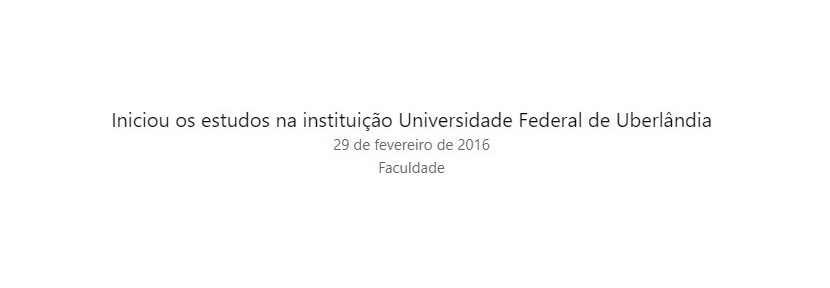
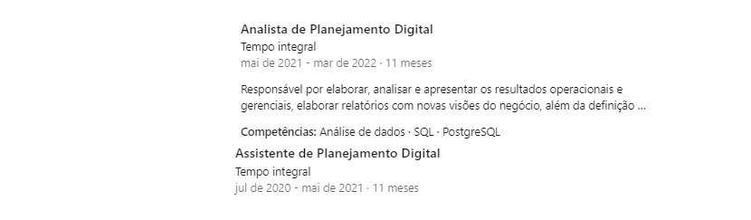
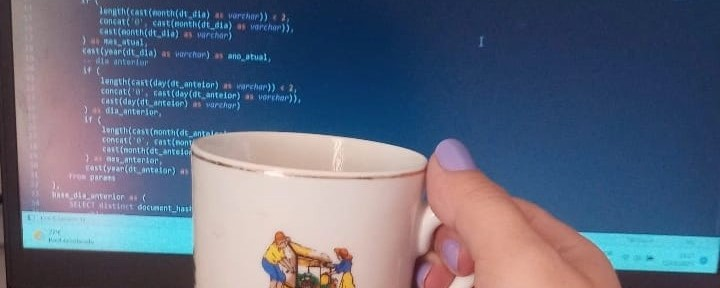
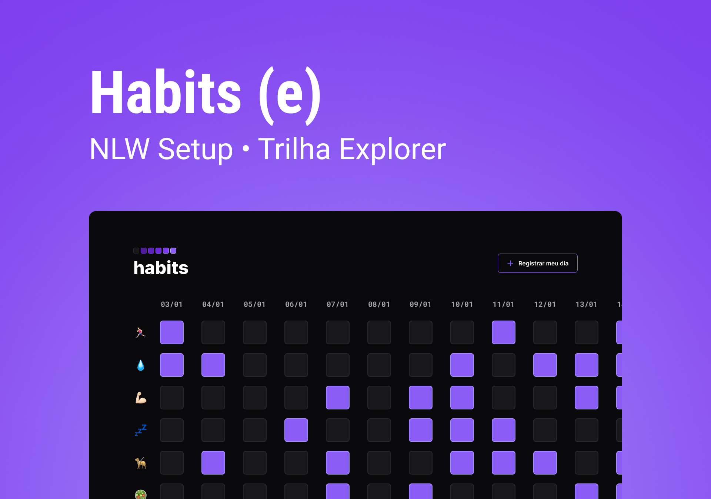

Fevereiro 2016
Inicio de uma Jornada

Próximo a finalização do Ensino Médio, foi chegando os questionamentos
do que iria querer seguir dali pra frente e diferente das outras
pessoas da minha turma, não era uma criança de tinha os brilhos nos
olhos causado por outras profissões que não fosse relacionada a area
de exatas, algo diferente daquilo não me fazia sentido e foi ai que
comecei a estudar Matemática na UFU, foi um periodo de grande
aprendizado não só acadêmico, mas pessoal também e infelizmente
precisou trancar o curso e retornar a minha cidade...
Outubro de 2016
Inicio de carreira

Em outubro do mesmo ano, comecei a trabalhar em uma empresa do
segmento de recuperação de crédito, lá, tive a oportunidade de criar
um plano de carreira para profissionais das áreas operacionais e
administrativas. Até que, em julho de 2020, cheguei ao ponto de
começar a realmente seguir uma carreira: A área de Planejamento..
Abril de 2022
Nova Jornada

Sem dúvidas lá foi essencial para que eu me tornasse a profissional
que sou hoje, aprendi e ensinei muitas coisas, já existia o sentimento
de dever cumprido e decidi dar um novo passo na minha Jornada, comecei
a trabalhar em uma Fintech como Channel Performance/Email & Inbound
MKT Analyst, onde possuo contato diário com análise de dados para
tomada de decisões e criações de estratégias, aqui consigo explorar
ainda mais meu lado analítico e aprimorar minha relação com Dados,
lidar com dados se tornou parte da minha rotina e em busca de
aprimorar ainda mais meus conhecimentos iniciei uma Formação de
Análise de Dados pela DSA (Data Science Academy)...
Janeiro de 2023
Minha primeira NLW

Em contato com amigos da área descobri a Rocketseat no início do ano,
recebi o incentivo e convite para participar da minha primeira NLW e
aumentar meu contato com o universo de Desenvolvimento Web, desde
então comecei a criar novos interesses para área de desenvolvimento,
finalizei minha primeira NLW com brilhos nos olhos e estou aqui mais
uma vez finalizando a segunda de muitas, tenho certeza que essa
trajetória está só começando...Nos vemos ainda, até a próxima!